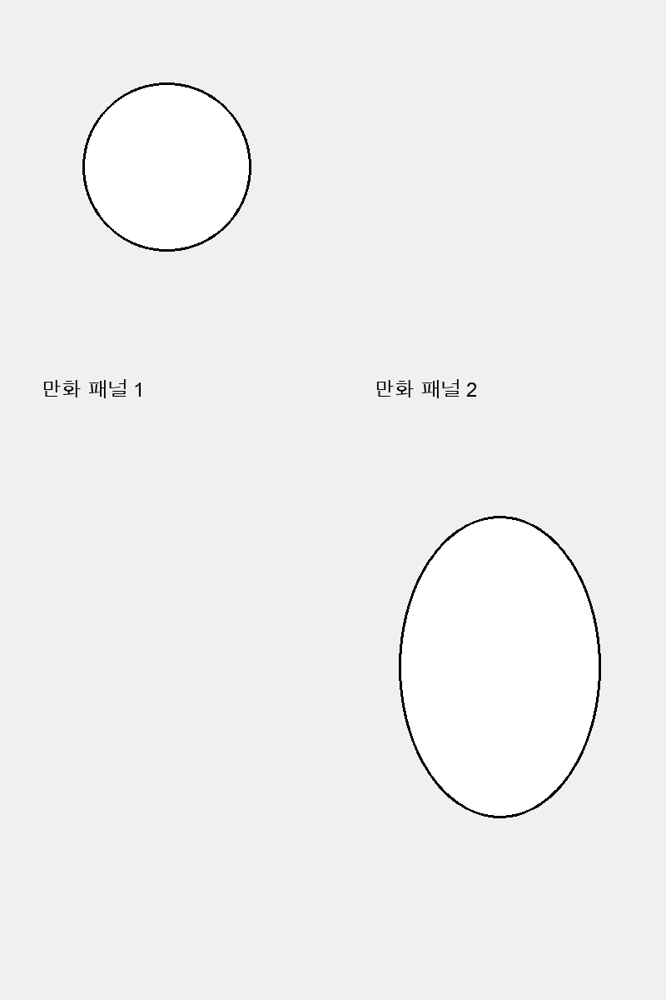
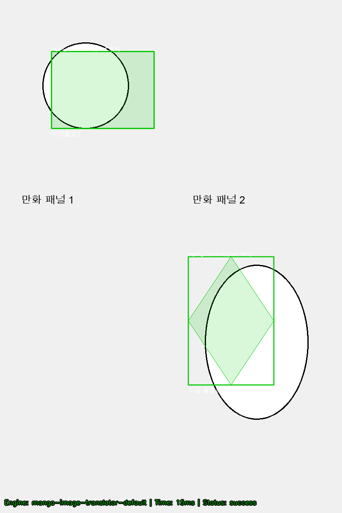

Engine not executed
Engine not executed
Engine not executed
Please copy the template below, fill out the metrics for each image and pipeline based on visual inspection, and save it as a manual review report:
{
"manualReview": [
{
"imageName": "example_page.png",
"pipeline": "manga-image-translator-ctd",
"expectedTextRegionCount": 0,
"detectedTruePositives": 0,
"falsePositives": 0,
"missedRegions": 0,
"unreadableRegions": 0,
"notes": ""
}
]
}